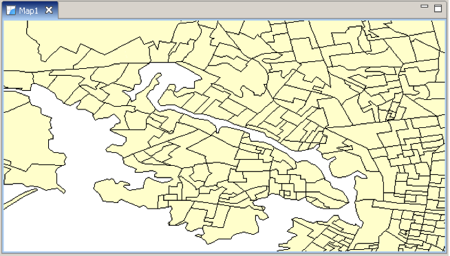
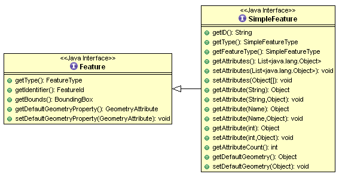
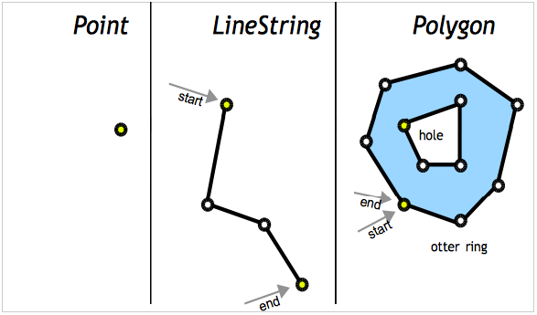
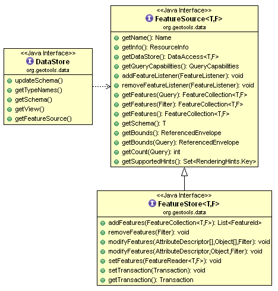

Feature Tutorial¶
Welcome¶
Welcome to Geospatial for Java - this workbook is aimed at Java developers who are new to geospatial and would like to get started.
You should have completed either the GeoTools NetBeans Quickstart or the GeoTools Eclipse Quickstart prior to running through this workbook. We need to be sure that you have an environment to work in with GeoTools jars and all their dependencies. For those using maven we will start off each section with the dependencies required.
This workbook features a new “code first” approach. We have made every effort to make these examples both visual and code centered. We have included some background materials explaining the concepts and ideas in case you are interested.
This workbook is featured as part of OSDC2011, FOSS4G 2010 and FOSS4G 2009 conferences.
About Your Instructors
- Jody Garnett is the lead architect for the uDig project; and on the steering committee for GeoTools; GeoServer and uDig. Taking the role of geospatial consultant a bit too literally Jody has presented workshops and training courses on every continent (except Antarctica). Jody Garnett is an employee of LISAsoft.
- Michael Bedward is a researcher with the NSW Department of Environment and Climate Change and an active contributor to the GeoTools users’ list. He has a particularly wide grasp of all the possible mistakes one can make using GeoTools.
CSV2SHP¶
We are trying a new track for introducing features this year; rather than reading through a shapefile and ripping things apart in an artificial exercise, we are going to start by building a shapefile from scratch so you get to see every last thing that goes into creating features.
The tutorial covers the following:
- Creating a FeatureType, FeatureCollection and Features
- Using a GeometryFactory to build Points
- Writing out a Shapefile
- Forcing a Projection
At the end of the tutorial you will be able to create your own custom shapefiles.
Comma Separated Value¶
To start with you will need a CSV file.
Create a text file location.csv and copy and paste the following locations into it:
LAT, LON, CITY, NUMBER 46.066667, 11.116667, Trento, 140 44.9441, -93.0852, St Paul, 125 13.752222, 100.493889, Bangkok, 150 45.420833, -75.69, Ottawa, 200 44.9801, -93.251867, Minneapolis, 350 46.519833, 6.6335, Lausanne, 560 48.428611, -123.365556, Victoria, 721 -33.925278, 18.423889, Cape Town, 550 -33.859972, 151.211111, Sydney, 436
Or download
locations.csv.Feel free to add other locations to the file such as your home town.
Dependencies¶
Please ensure your pom.xml includes the following:
<dependencies>
<dependency>
<groupId>org.geotools</groupId>
<artifactId>gt-shapefile</artifactId>
<version>${geotools.version}</version>
</dependency>
<dependency>
<groupId>org.geotools</groupId>
<artifactId>gt-epsg-hsql</artifactId>
<version>${geotools.version}</version>
</dependency>
</dependencies>
Note that the jars mentioned above will pull in a host of other dependencies (such as the hsql database driver).
Main Application¶
Please create the class Csv2Shape.java
Copy and paste in the following code:
package org.geotools.tutorial.feature; import java.io.BufferedReader; import java.io.File; import java.io.FileReader; import java.io.Serializable; import java.util.ArrayList; import java.util.HashMap; import java.util.List; import java.util.Map; import javax.swing.UIManager; import com.vividsolutions.jts.geom.Coordinate; import com.vividsolutions.jts.geom.GeometryFactory; import com.vividsolutions.jts.geom.Point; import org.geotools.data.DataUtilities; import org.geotools.data.DefaultTransaction; import org.geotools.data.Transaction; import org.geotools.data.collection.ListFeatureCollection; import org.geotools.data.shapefile.ShapefileDataStore; import org.geotools.data.shapefile.ShapefileDataStoreFactory; import org.geotools.data.simple.SimpleFeatureCollection; import org.geotools.data.simple.SimpleFeatureSource; import org.geotools.data.simple.SimpleFeatureStore; import org.geotools.feature.simple.SimpleFeatureBuilder; import org.geotools.feature.simple.SimpleFeatureTypeBuilder; import org.geotools.geometry.jts.JTSFactoryFinder; import org.geotools.referencing.crs.DefaultGeographicCRS; import org.geotools.swing.data.JFileDataStoreChooser; import org.opengis.feature.simple.SimpleFeature; import org.opengis.feature.simple.SimpleFeatureType; /** * This example reads data for point locations and associated attributes from a * comma separated text (CSV) file and exports them as a new shapefile. It illustrates how to build a feature type. * <p> * Note: to keep things simple in the code below the input file should not have additional spaces or * tabs between fields. */ public class Csv2Shape { public static void main(String[] args) throws Exception { // Set cross-platform look & feel for compatability UIManager.setLookAndFeel(UIManager.getCrossPlatformLookAndFeelClassName()); File file = JFileDataStoreChooser.showOpenFile("csv", null); if (file == null) { return; }
Now we look at the rest of the main method in sections...
Create a FeatureType¶
We create a FeatureType to describe the data that we are importing from the CSV file and writing to a shapefile.
Here we use the DataUtilities convenience class:
/*
* We use the DataUtilities class to create a FeatureType that will describe the data in our
* shapefile.
*
* See also the createFeatureType method below for another, more flexible approach.
*/
final SimpleFeatureType TYPE = DataUtilities.createType("Location",
"the_geom:Point:srid=4326," + // <- the geometry attribute: Point type
"name:String," + // <- a String attribute
"number:Integer" // a number attribute
);
System.out.println("TYPE:"+TYPE);
Create features¶
We can now read the CSV file and create a feature for each record. Please note the following:
Use of GeometryFactory to create new Points
Creation of features (SimpleFeature objects) using SimpleFeatureBuilder
/* * A list to collect features as we create them. */ List<SimpleFeature> features = new ArrayList<SimpleFeature>(); /* * GeometryFactory will be used to create the geometry attribute of each feature, * using a Point object for the location. */ GeometryFactory geometryFactory = JTSFactoryFinder.getGeometryFactory(); SimpleFeatureBuilder featureBuilder = new SimpleFeatureBuilder(TYPE); BufferedReader reader = new BufferedReader(new FileReader(file)); try { /* First line of the data file is the header */ String line = reader.readLine(); System.out.println("Header: " + line); for (line = reader.readLine(); line != null; line = reader.readLine()) { if (line.trim().length() > 0) { // skip blank lines String tokens[] = line.split("\\,"); double latitude = Double.parseDouble(tokens[0]); double longitude = Double.parseDouble(tokens[1]); String name = tokens[2].trim(); int number = Integer.parseInt(tokens[3].trim()); /* Longitude (= x coord) first ! */ Point point = geometryFactory.createPoint(new Coordinate(longitude, latitude)); featureBuilder.add(point); featureBuilder.add(name); featureBuilder.add(number); SimpleFeature feature = featureBuilder.buildFeature(null); features.add(feature); } } } finally { reader.close(); }
Note
If you have used previous versions of GeoTools you might be used to creating a new FeatureCollection and using the add method to accumulate features. This usage has now been deprecated and we encourage you to treat FeatureCollections as immutable views or result sets.
Create a shapefile From a FeatureCollection¶
Things to note as we create the shapefile:
Use of DataStoreFactory with a parameter indicating we want a spatial index
The use of createSchema( SimpleFeatureType ) method to set up the shapefile
/* * Get an output file name and create the new shapefile */ File newFile = getNewShapeFile(file); ShapefileDataStoreFactory dataStoreFactory = new ShapefileDataStoreFactory(); Map<String, Serializable> params = new HashMap<String, Serializable>(); params.put("url", newFile.toURI().toURL()); params.put("create spatial index", Boolean.TRUE); ShapefileDataStore newDataStore = (ShapefileDataStore) dataStoreFactory.createNewDataStore(params); /* * TYPE is used as a template to describe the file contents */ newDataStore.createSchema(TYPE);
Write the feature data to the shapefile¶
Things to note:
We check that we have read-write access by confirming our FeatureSource object implements the FeatureStore methods
Take a moment to check how closely the shapefile was able to match our template (the SimpleFeatureType TYPE). Compare this output to see how they are different.
The SimpleFeatureStore that we use to do this expects a FeatureCollection object, so we wrap our list of features in a ListFeatureCollection.
The use of transaction commit() to safely write out the features in one go.
/* * Write the features to the shapefile */ Transaction transaction = new DefaultTransaction("create"); String typeName = newDataStore.getTypeNames()[0]; SimpleFeatureSource featureSource = newDataStore.getFeatureSource(typeName); SimpleFeatureType SHAPE_TYPE = featureSource.getSchema(); /* * The Shapefile format has a couple limitations: * - "the_geom" is always first, and used for the geometry attribute name * - "the_geom" must be of type Point, MultiPoint, MuiltiLineString, MultiPolygon * - Attribute names are limited in length * - Not all data types are supported (example Timestamp represented as Date) * * Each data store has different limitations so check the resulting SimpleFeatureType. */ System.out.println("SHAPE:"+SHAPE_TYPE); if (featureSource instanceof SimpleFeatureStore) { SimpleFeatureStore featureStore = (SimpleFeatureStore) featureSource; /* * SimpleFeatureStore has a method to add features from a * SimpleFeatureCollection object, so we use the ListFeatureCollection * class to wrap our list of features. */ SimpleFeatureCollection collection = new ListFeatureCollection(TYPE, features); featureStore.setTransaction(transaction); try { featureStore.addFeatures(collection); transaction.commit(); } catch (Exception problem) { problem.printStackTrace(); transaction.rollback(); } finally { transaction.close(); } System.exit(0); // success! } else { System.out.println(typeName + " does not support read/write access"); System.exit(1); } }
This completes the main method.
Prompt for the output shapefile¶
This method prompts the user for an appropriate shapefile to write out to. The original csv file is used to determine a good default shapefile name.
/** * Prompt the user for the name and path to use for the output shapefile * * @param csvFile * the input csv file used to create a default shapefile name * * @return name and path for the shapefile as a new File object */ private static File getNewShapeFile(File csvFile) { String path = csvFile.getAbsolutePath(); String newPath = path.substring(0, path.length() - 4) + ".shp"; JFileDataStoreChooser chooser = new JFileDataStoreChooser("shp"); chooser.setDialogTitle("Save shapefile"); chooser.setSelectedFile(new File(newPath)); int returnVal = chooser.showSaveDialog(null); if (returnVal != JFileDataStoreChooser.APPROVE_OPTION) { // the user cancelled the dialog System.exit(0); } File newFile = chooser.getSelectedFile(); if (newFile.equals(csvFile)) { System.out.println("Error: cannot replace " + csvFile); System.exit(0); } return newFile; }
Running the Application¶
When you run this application it will prompt you for:
- The location of a CSV file to read; and then
- The shapefile to create
Things to Try¶
Another way to build a SimpleFeatureType¶
Although the DataUtilities class used above provided a quick and easy way to build a SimpleFeatureType, for most applications you will want to take advantage of the more flexible SimpleFeatureTypeBuilder.
Here is how to use SimpleFeatureTypeBuilder to accomplish the same result:
/** * Here is how you can use a SimpleFeatureType builder to create the schema for your shapefile * dynamically. * <p> * This method is an improvement on the code used in the main method above (where we used * DataUtilities.createFeatureType) because we can set a Coordinate Reference System for the * FeatureType and a a maximum field length for the 'name' field dddd */ private static SimpleFeatureType createFeatureType() { SimpleFeatureTypeBuilder builder = new SimpleFeatureTypeBuilder(); builder.setName("Location"); builder.setCRS(DefaultGeographicCRS.WGS84); // <- Coordinate reference system // add attributes in order builder.add("the_geom", Point.class); builder.length(15).add("Name", String.class); // <- 15 chars width for name field builder.add("number",Integer.class); // build the type final SimpleFeatureType LOCATION = builder.buildFeatureType(); return LOCATION; }
Note the use of an upper-case constant to hold the SimpleFeatureType. Because the SimpleFeatureType class is immutable, tracking them as final variables can help you to remember that they cannot be modified once created.
With this method our SimpleFeatureType contains a CoordinateReferenceSystem so there’s no need to call forceSchemaCRS to generate the ”.prj” file. Also, we are now limiting the Name field to 15 characters.
Other things to try¶
Modify the code to read the feature attribute names from the data file header rather than hard-coding them in the application:
LAT, LON, CITY, NUMBER
You should be able to use the SimpleFeatureTypeBuilder.
Use the Geometry “buffer” method to create circles based on the population size of the each city.
Polygon polygon = location.buffer( 0.1 );
It is easy to write a quick CSVReader as we have done here; but harder to write a good one that can handle quotation marks correctly. JavaCSV is an open source library to read CSV files with a variety of options.
To quickly find dependencies you can use the website http://mvnrepository.com/.
Sites like this will directly provide you a maven dependency that you can cut and paste into your pom.xml.
<dependency> <groupId>net.sourceforge.javacsv</groupId> <artifactId>javacsv</artifactId> <version>2.0</version> </dependency>
For a working example of how to use this library visit the http://www.csvreader.com/ website.
Use the same techniques to create shapefiles from data in other structured file formats such as geojson
The earth has just passed through a meteor storm – generate 100 circles of different sizes across the globe. Was your town hit?
Generating a shapefile from a model or analysis is a common use.
Read up about the other Geometry classes supported by shapefiles: MultiLineString for linear features and MultiPolygon for area features and modify this example to work with these.
Feature¶
A feature is something that can be drawn on a map. The strict definition is that a feature is something in the real world – a feature of the landscape - Mt Everest, the Eiffel Tower, or even something that moves around like your great aunt Alice.
Explaining the concept to Java developers is easy - a feature is an Object.
Like a java object features can contain some information about the real world thing that they represent. This information is organized into attributes just as in Java information is slotted into fields.
{kind=link}
Occasionally you have two features that have a lot in common. You may have the LAX airport in Los Angeles and the SYD airport in Sydney. Because these two features have a couple of things in common it is nice to group them together - in Java we would create a Class called Airport. On a map we will create a Feature Type called Airport.

Although it is not a capability supported by Java, early programming languages made use of a prototype system (rather than a class system) that supported lots of “one off” Objects. You will find this situation is fairly common when making maps – since how many Eiffel towers are there? You will also occasionally find the same real world thing represented a couple of different ways (the Eiffel tower can be a landmark or a tower depending on context).
Here is a handy cheat sheet:
Java GeoSpatial Object Feature Class FeatureType Field Attribute Method Operation
The Feature model is actually a little bit more crazy than us Java programmers are used to since it considers both attribute and operation to be “properties” of a Feature. Perhaps when Java gets closures we may be able to catch up.
The really interesting thing for me is that map makers were sorting out all this stuff back in the 1400s and got every bit as geeky as programmers do now. So although we would love to teach them about object oriented programing they already have a rich set of ideas to describe the world. On the bright side, map makers are starting to use UML diagrams.
FeatureClass¶
In GeoTools we have an interface for Feature, FeatureType and Attribute provided by the GeoAPI project. In general GeoAPI provides a very strict interface and GeoTools will provide a class.

It is very common for a Feature to have only simple Attributes (String, Integer, Date and so on) rather than references to other Features, or data structures such as List<Date>. Features that meet this requirement are so common we have broken out a sub-class to represent them called SimpleFeature.
At the Java level the Feature API provided by GeoTools is similar to how java.util.Map is used – it is a Java data structure used to hold information. You can look up attribute values by key; and the list of keys is provided by the FeatureType.
Geometry¶
The other difference between an Object and a Feature is that a Feature has some form of location information (if not we would not be able to draw it on a map). The location information is going to be captured by a “Geometry” (or shape) that is stored in an attribute.

We make use of the JTS Topology Suite (JTS) to represent Geometry. The JTS library provides an excellent implementation of Geometry – and gets geeky points for having a recursive acronym ! JTS is an amazing library and does all the hard graph theory to let you work with geometry in a productive fashion.
Here is an example of creating a Point using the Well-Known-Text (WKT) format.
GeometryFactory geometryFactory = JTSFactoryFinder.getGeometryFactory( null );
WKTReader reader = new WKTReader( geometryFactory );
Point point = (Point) reader.read("POINT (1 1)");
You can also create a Point by hand using the GeometryFactory directly.
GeometryFactory geometryFactory = JTSFactoryFinder.getGeometryFactory( null );
Coordinate coord = new Coordinate( 1, 1 );
Point point = geometryFactory.createPoint( coord );
DataStore¶
We ran into DataStore already in our Quickstart. The DataStore api is used to represent a File, Database or Service that has spatial data in it. The API has a couple of moving parts as shown below.

The FeatureSource is used to read features, the subclass FeatureStore is used for read/write access.
The way to tell if a File can be written to in GeoTools is to use an instanceof check.
String typeNames = dataStore.getTypeNames()[0];
SimpleFeatureSource source = store.getfeatureSource( typeName );
if( source instanceof SimpleFeatureStore){
SimpleFeatureStore store = (SimpleFeatureStore) source; // write access!
store.addFeatures( featureCollection );
store.removeFeatures( filter ); // filter is like SQL WHERE
store.modifyFeature( attribute, value, filter );
}
We decided to handle write access as a sub-class (rather than an isWritable method) in order to keep methods out of the way unless they could be used.